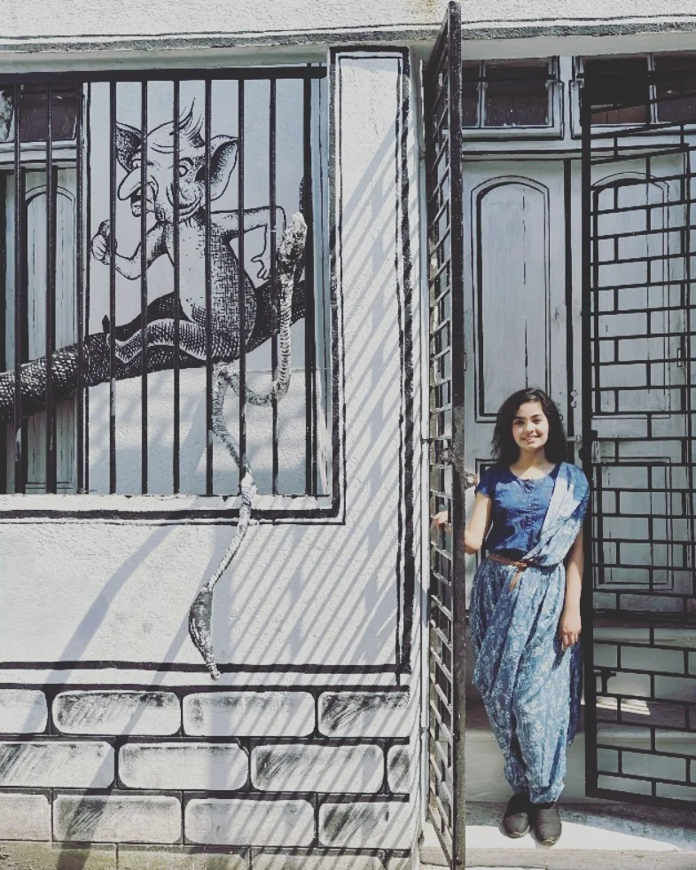

👩💻'"/>Education

Master of Science, Interactive Media Technology
Kungliga Tekniska Högskolan (KTH), Sweden
2020 – Present · 4.4/5

Graduate Exchange Student, Computer and Communication Sciences
École Polytechnique Fédérale de Lausanne (EPFL), Switzerland
2021 – 2023 · 4.2/6

Bachelor of Technology, Information Technology
West Bengal University of Technology (WBUT), India
2014 – 2019 · 6.8/10
Undergrad Visiting Student, Computer Science and Engineering
Indian Institute of Technology Kharagpur (IITKGP), India
2017 – 2018 · 9.0/10
Journey
—